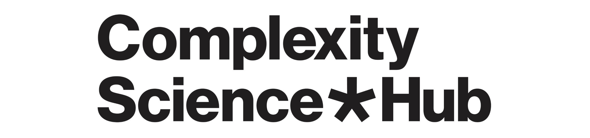

Polarisierung durch Algorithmen?
Demokratie und Meinungsbildung im digitalen Zeitalter
Mythen auf dem Prüfstand
Mag. Dr. Hannah Metzler
Complexity Science Hub & Medizinische Universität Wien


Emotionen & Fehlinformationen


Zerstören Social Media die Demokratie?
Annahmen:
- Algorithmen radikalisieren Menschen
- Digitale Echokammern polarisieren die Gesellschafft
Lösungen?


- Echokammern auflösen & Algorithmus abdrehen
- Würde das wirken?
Einfluss von Algorithmen
Facebook & Instagram Studien: USA, Wahlen 2020
Algorithmus abgedreht oder weniger gleichgesinnte Quellen

Fehlinformation als Symptom gesellschaftlicher Polarisierung


- Vertrauen in Institutionen (1)
- Mehr Korruption => Mehr Verschwörungsmythen
- Polarisierung der Eliten (2, 3, 4)
Nuanciertes Gesamtbild

Social Media
- Menschen (in Gruppen)
- Algorithmen & Co.
Vertrauen aufbauen
- Reale Probleme lösen
- Transparente & vertrauenswürdige Institutionen
Für Neugierige

Tolle Bücher

Mercier, 2020 Falschinformation & Propaganda

Bail, 2021 Polarisierung & Social Media
Social Media verzerren die Wirklichkeit
Polarisierung scheint stärker, als sie ist.
Törnberg 2022; Bail 2021; Metzler & Garcia 2023